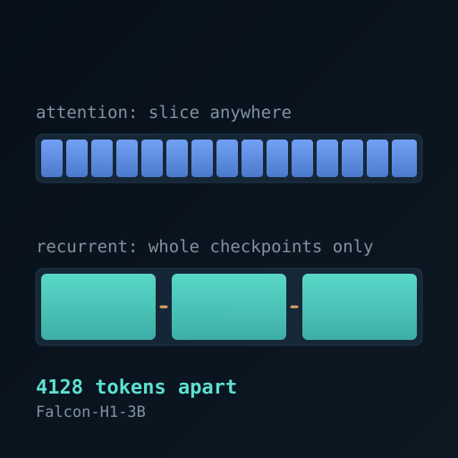

KV Cache Visualizations
Interactive explorations of GPU memory, KV cache optimization, and the scaling challenges facing modern LLM inference

KV Cache Memory Growth
Watch GPU memory fill up as context length grows across 5 different LLM architectures

Training Memory Simulation
Explore memory requirements during model training with different batch sizes and optimizers

Memory Projections 2020–2030
See how KV cache memory demands scale with projected context length growth over the decade

KV Cache Orchestrators
Compare LMCache, SGLang HiCache, UCM, and FlexKV approaches to cache management

Zipfian Distribution & Engram Cache
Visualize token access patterns and how Engram cache exploits frequency distribution

Agentic Cache Offloading
See how AI agents coordinate KV cache offloading across tiered storage

Hybrid Model Checkpoint Spacing
See where an attention plus recurrent model can resume a cached prefix, and how vLLM's block size and token budget decide it

Cartridge Economics & Break-even
Find when reusable learned KV caches repay their training, storage, and loading costs through avoided RAG prefill